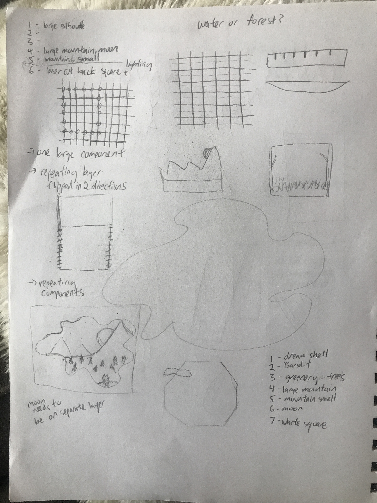
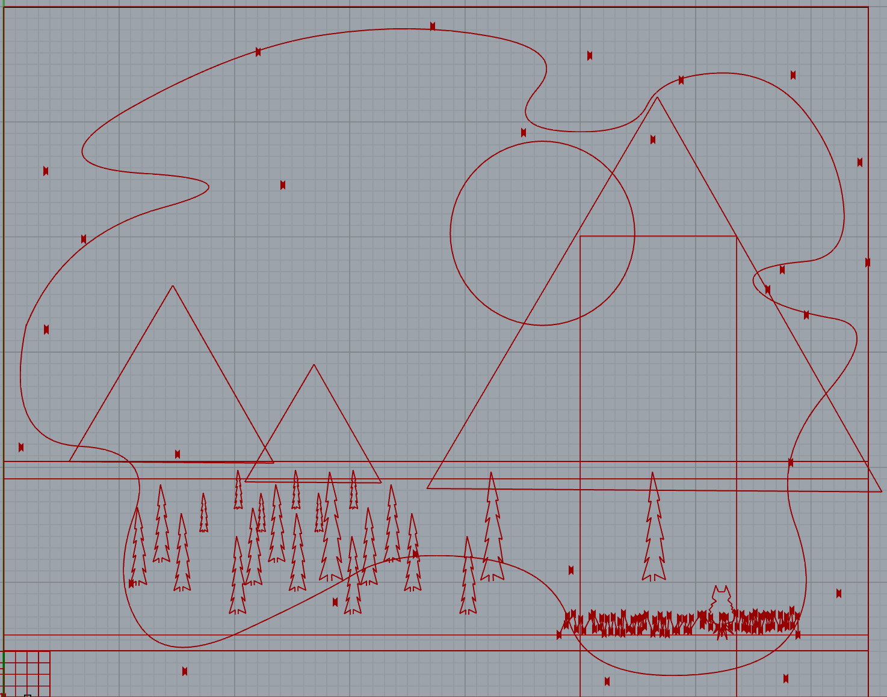
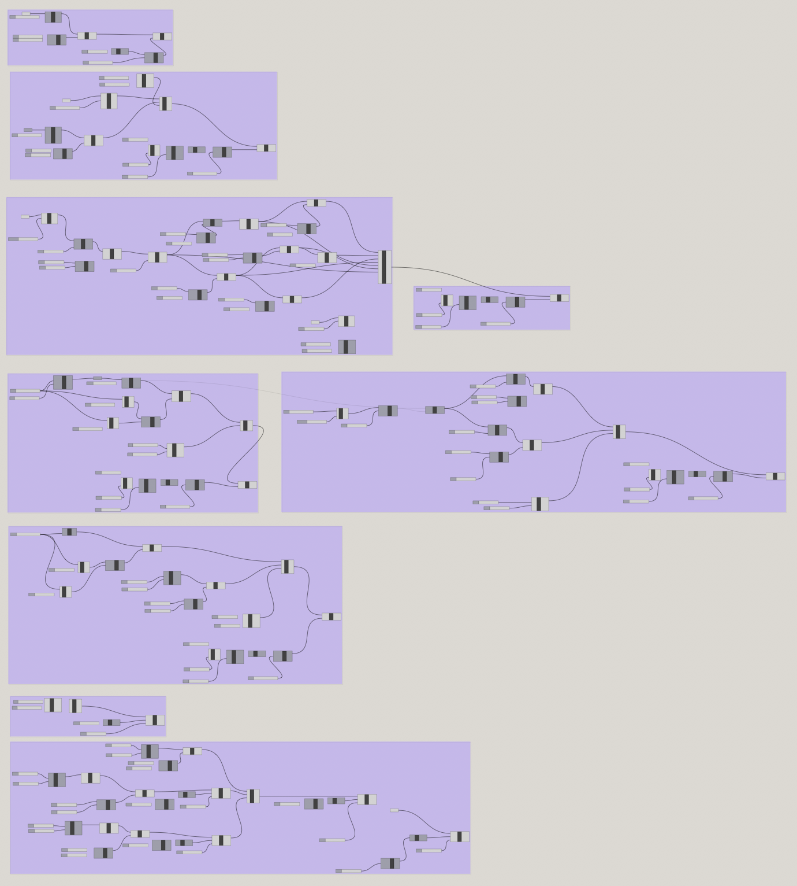
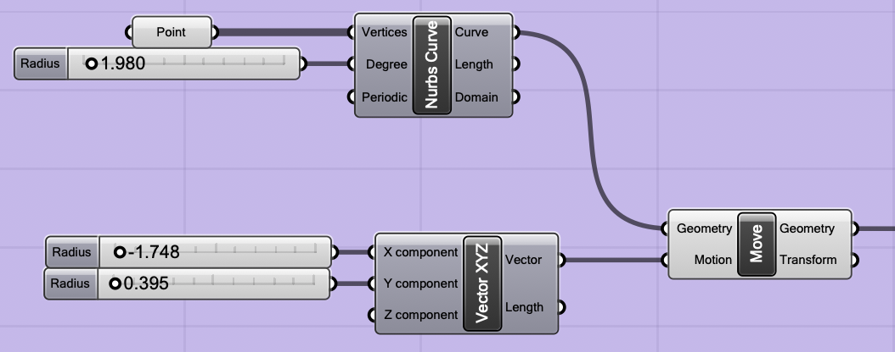
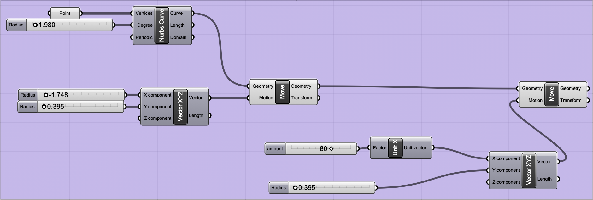
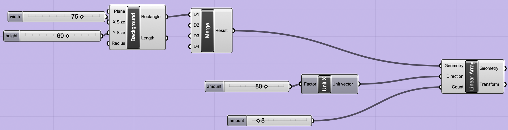
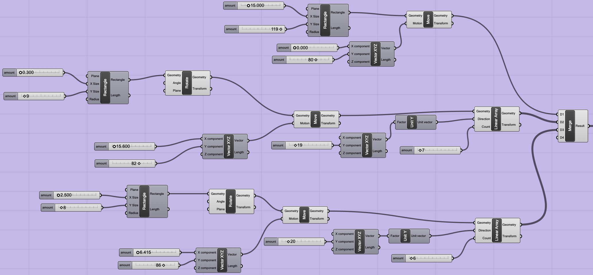
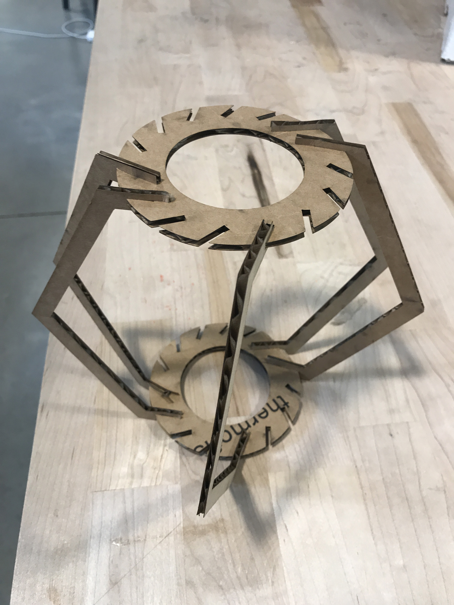

While I had the option of redoing my previous project, I thought it was a little too simple and wanted to create something that used the same concept as my previous creation but with more purpose. I immediately thought of doing some kind of
papercut in a box when I heard that there were two different material thicknesses. Of course, when I looked on Pinterest, many had done the same.
My Makerspace board is here.
Since I was less comfortable with the program, drawing was a good way for me to understand what I wanted to do before getting completely lost.

I've never used Grasshopper, Rhino, or anything like Grasshopper or Rhino, so I felt completely out of my comfort zone. I probably should have done the same as assignment 1 but thought it would be worthwhile to try something a little more complex to understand the program better. It took me hours to just understand what I was doing and I referenced a lot of video's including Nadya's video and many, many, YouTube videos.
I started by building the scene. After spending 1.5 days in Rhino and Grasshopper, Rhino wouldn't save my file and completely crashed. If not for saving most of my files in Grasshopper, I would have lost all of my work.
Layered Scene in Rhino
Layered Scene in Grasshopper
I'm still not sure if I did my work the right way or not, but I've included some of my learnings and discoveries below.
How to Make Curves
How to Move Objects
How to Duplicate items via "linear array"
How to Merge multiple shapes to make duplication easier
Fortunately, exporting from Rhino to Illustrator was pretty straightforward.
When I opened the file in Illustrator, I made a few edits to make it print ready:
This was a little trickier since I was using a new material (110 pound cardstock). I ended up using the print settings from Epilog for a Father's Day card and it actually worked well.
For cardboard, I used the same settings as last time.
Assembly for this was a little trickier since it required some match up between the top and bottom frame and paper pieces.
